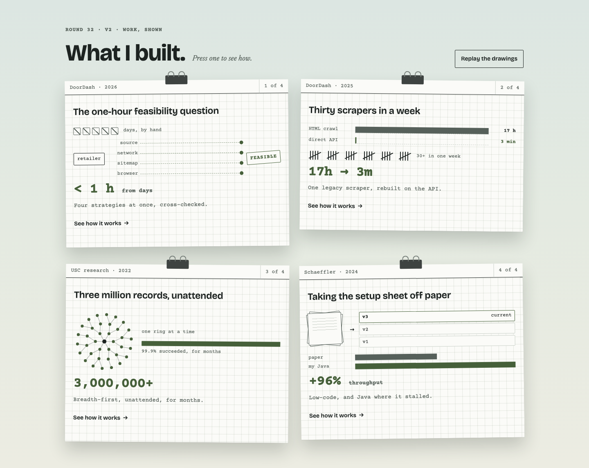
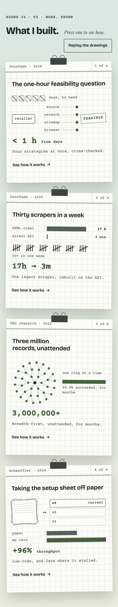
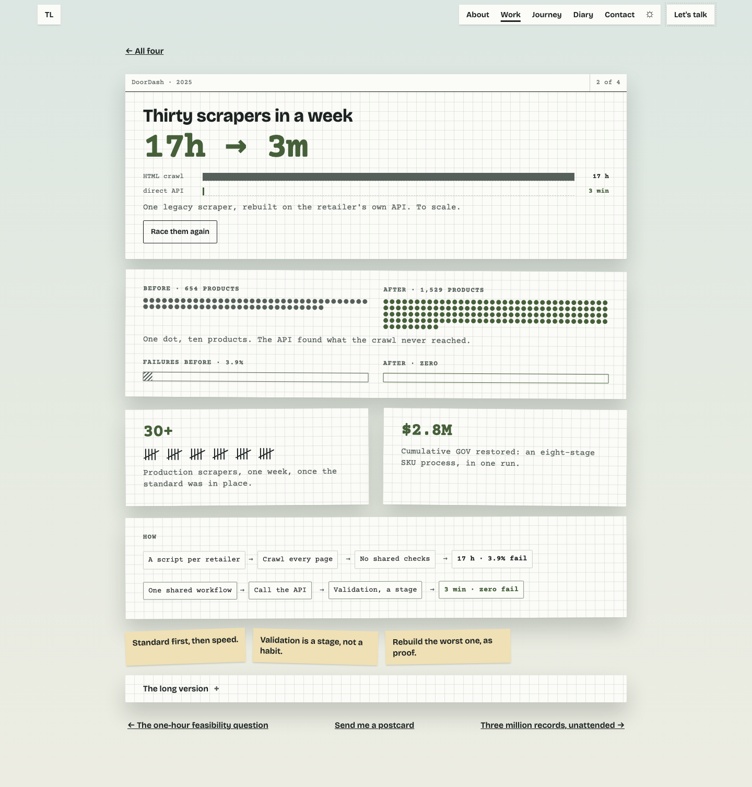
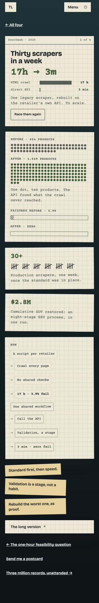

The work, shown
v1 told; v2 shows. Every drawing is computed from a number already in the content. The words are behind the click.




The first screen with my name (hero) and the postcard's note (contact).
- The four exhibits as drawn.
- The case page as a story; the other three follow it with their own drawings.
- The few words: "Press one to see how.", the captions, the three notes.